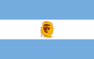
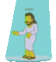

De: La Frikipedia, la enciclopedia extremadamente seria.
De: La Frikipedia, la enciclopedia extremadamente seria. De: La Frikipedia, la enciclopedia extremadamente seria.

|

|
|
|
|
|
|
|
|
|---|---|---|---|---|---|---|---|---|
| Template Squad | Plantillas administrativas | Navboxes | Plantillas temáticas | Infoboxes | Frikiboxes | Plantillas para usuarios | Emoticonos | Directorio |

Las plantillas temáticas se utilizaban para advertir de qué trataba el artículo en el que estaban incluidas, con el fin de evitar cosas como "HOYGAN NO HENTENDY NADA", quejas de parte de lloricas por la temática del artículo, etcétera. Sin embargo, han sido eliminadas por decisión administrativa, ya que si se colocaban al principio de un artículo, los agregadores (como por ejemplo, el caralibro) cogían esta plantilla como el texto del artículo.
A continuación se muestran algunas plantillas que se usaban, con sus indicaciones.
Para artículos que se quedaron como candidatos al Frikinobel.
| Frikinobel Este artículo fue candidato al premio Frikinobel, pero perdió. Si eres el autor no te desesperes, ¡sigue jugando! Hay miles de premios. Si no eres el autor ándate con ojo al modificarlo, por respeto al premio (y a la hostia que te puede caer). |
Para cualquier artículo Orgullosamente realizado en Argentina.
|  | ¡EH GUACHIN! Este artículo, o sea, es re argentino, tipo nah. Hay humor, que puede ser que no caces una viteh, pero igual, leelo y copate. Si querés podes toquetearlo todo, pero no te mandés cagadas, boludo. |
Para cualquier cosa Made in Colombia.
| Pilas Parce Este artículo es "Made in Colombia". Si usted no sabe quien es Danielita, William Vinasco o un paseo de olla, es mejor que le pregunte a alguien que sepa el idioma Chibchombiano. Y si usted es "Made in Colombia", por favor no se ofenda, esto es solo para mamar gallo. |
¡Ojo!, ecchi, no hentai, salido.
| 100px | ¡Hentai! Este artículo es sobre un anime o manga con temática Ecchi o derivados, o bien tiene imágenes de ese tipo. Puedes poner imágenes así o con Fanservice, pero que no sean hentai niño salido. La frikipedia es libre de pr0n. |
Para artículos sobre algo que está en desarrollo, o bien, algún Frikipedista-Profeta decidió hacer un artículo de algo que no ha sucedido.
Artículos ganadores del Frikinobel, o sea que debes leerlos, que molan un huevo.
| Frikinobel De orden del señor administrador, se hace saber, que este artículo, ganó un premio Frikinobel. Así que el que lo toque, que sepa, que la furia de Chuck Norris, y del Monstruo de espagueti volador, caerán sobre esa persona. |

|
Para cualquier cosa relacionada con aquesta magna web.
| ATENCIÓN Este artículo está basado en bromas internas frikipedistas o derivadas. Si no llevas tu tiempo visitando la Frikipedia, su chat, u otras cosas paridas por Krusher no vas a entender un mojón |
Plantilla para artículos con los que probablementes digas ein?, o en casos extremos, WTF?
| ANTES DE LEER: Ten ciudado, este artículo ha sido escrito por pacientes de un manicomio guatemalteco. La Frikipedia no se hace responsable de los daños causados en tu pequeño cerebro. |
Para artículos de música, grupos, cantentes, etcétera.
| MÚSICA Este artículo trata sobre la música, por lo que si no estás pegado a tu mp3 todo el día, no vas a entender nada de esto. |
Cualquier artículo que hable de religión en general, incluyendo por supuesto a nuestro señor el Monstruo de Espagueti Volador.
| ATENCIÓN El siguiente artículo tiene que ver con cosas de religión. Si usted da la vida por su santo o por Jesucristo, este artículo no es apto para usted. |
 |
Achtung, si no tienes mínimo 18 años, GTFO, no puedes leer esto, morboso.

|
Sexo Este artículo contiene cosas sobre el amor y el sexo. Si eres mayor de 18 años puedes leerlo; si no se recomienda tener cuidado. |
Para artículos hechos por y para garrotas.

|
Este artículo tiene cosas que solo los garrotas y gamers entienden, así que si no pasas 48 horas diarias jugando, mejor busca otro artículo para leer |
Autor(es):